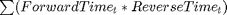

Seismic Analysis by Reverse-Time Migration
This document provides background information for the files of the MATLAB Seismic Data Analysis Scientific Application, part of the SC'14 Student Cluster Competition.
Contents
What is a Seismic Survey
A seismic survey as it pertains to the analyses for this competition is the recording and then processing of reflected seismic waves from the Earth's subsurface for the purpose of imaging the subsurface structure. Watch the short YouTube video below for a more detailed description.
What is Seismic Migration
From Wikipedia Seismic migration is the process by which seismic events are geometrically re-located in either space or time to the location the event occurred in the subsurface rather than the location that it was recorded at the surface, thereby creating a more accurate image of the subsurface.
For this competition, we will focus on two dimensional models and perform depth migration using reverse-time migration. Depth migration requires an initial velocity model of the subsurface structure that is used to process the seismic data (shot) records.
What is Reverse-Time Migration
Reverse-time migration is a depth migration process where a velocity model of the subsurface is assumed, and this model is used to adjust the data by a four step process:
- Solve the 2D wave-equation using the assumed velocity model in reverse-time. This is done by feeding in the shot (data) record in reverse-time order as the boundary condition at the surface.
- Solve the 2D wave-equation again with the velocity model in (forward) time. Feed the solution from (1) in as the boundary condition.
- Use the solutions of (1) and (2) across all time to resolve reflective boundaries as  to create the pre-stack migration image
- Perform 1-3 repeatedly for each shot and add up all pre-stack images to get the final image of the subsurface
An example animation from Ekkehart Tessmer is shown below, which also has a more detailed descriptions of the reverse-time migration process.


Of course in reality, the velocity model is generally not known and has to be iteratively resolved. So in practice, you'd guess a velocity model, perform reverse-time migration, update the velocity model based upon results, and repeat until the velocity model no longer changes.
Your Goal
For this competition, you will be provided with the correct velocity model and simulated shot records. The imaging program will perform reverse-time migration on the simulated data set. Your challenge will be to optimize the performance of this model by processing as many shot records as possible in a quick as time as possible.
Overview of the Code
You have been provided several MATLAB files to perform the 2D Reverse-Time migration processing of simulated data. There are two models included, a fault velocity model and a salt tooth velocity model. The fault model is small and can run in a matter of minutes without parallel computing. The salt tooth model is of moderate size, and will take hours to solve on a single compute node.
The directory structure is as follows:
- seismicCompetition - this folder contains files required
- faultModelData - data files for the fault model
- fileReader - utility functions for reading SEGY formatted data or managing reading/writing of data to disk for cases where the data is too large to fit into physical memory
- html - this documentation
- plots - utility functions for plotting overall progress
- results - resulting stacked image and timings
- rtm - functions for solving the 2D wave-equation in forward and reverse time, including GPU implementations
- saltToothModelData - data files for the salt tooth model
Files of Interest to You
The MATLAB files of interest for you are imageFaultModel and imageSaltToothModel. These are the two programs you can run and benchmark performance with and without parallel computing and GPU. To get a feel for how they work open up the imageFaultModel and take a look at the different code sections:
- Run Configuration - defines files, path, and run mode
- Model and Data Parameters - define the model parameters needed by other parts of the program. These are the velocity and shot record geometric and time parameters.
- Load Velocity Model - loads and plots the velocity model
- Load Shot Data Records - defines the data source for shot record
- Process Shots - Reverse Time Migration - performs the migration processing task using a defined run mode
TO BE REVIEWED BEFORE FINAL VERSION -- START
Note: You need to modify the remoteVelocityFile/remoteShotFiles, runMode and readFromMem parameter in these files. No other modifications should be required on your part.
remoteVelocityFile/remoteShotFiles - These files are read as memory mapped files. If the workers (see Parallel Computing with MATLAB below) do not share a filesystem with the MATLAB client, the files will need to be read again by the workers. Therefore, you'll need to list where the files are reachable on the compute nodes. If the workers can reach the velocity and shot files, then the remoteVelocityFile and remoteShotFiles can each be set to the emptry string (i.e. '').
readFromMem - The MATLAB code provided to you is set up to run in two modes:
- Read from Memory (readFromMem = true)
- Read from File (readFromMem = false)
Set readFromMem to true if the remoteVelocityFile and remoteShotFiles are reachable from the compute nodes and do not need to be reread.
If an entire parallel job is run on the machine running the MATLAB client, then set
readFromMem = true;
Otherwise, if the parallel job is run across multiple nodes, then set
readFromMem = false;
TO BE REVIEWED BEFORE FINAL VERSION -- END
runMode - The MATLAB code provided to you is set up to run in three modes (note: GPU is not currently implemented)
- Single CPU (runMode = {'serial'})
- HPC Cluster (runMode = {'parallel'})
- HPC Cluster with GPUs (runMode = {'parallel-gpu'})
Set these to run 1 or more cases by defining runMode as shown above, or more than one together, such as
runMode = {'serial','parallel'};
Parallel Computing with MATLAB
MATLAB supports parallel computing via the Parallel Computing Toolbox (PCT) and the MATLAB Distributed Computing Server (MDCS). PCT allows you to perform parallel computations on multicore computers and GPUs. MDCS allows you to extend computations to clusters and clouds.
To run multicore jobs on the MATLAB host computer using PCT, a parpool ("parallel pool") must be open, allowing any parallel constructs (e.g. parfor, parfeval, and spmd) to marshal code to the MATLAB workers. By using MDCS, the parpool can be extended across multiple nodes. By default, PCT provides a "local" profile to run multi-core jobs on the host computer. In order to run multi-node jobs, a new profile will need to be created to submit jobs to a scheduler. The scheduler can either be the MATLAB job scheduler (MJS) which ships with MDCS or a 3rd party scheduler (e.g. PBS, LSF, SLURM, etc.). The MDCS documentation provides instructions on how to start the MJS as well as interfacing to 3rd party schedulers.
NOTE: It is recommended to start no more than one worker per core. The default size of a parpool is specified in the Preferences > Parallel Computing Toolbox > Parallel Pool. To override the default size, call parpool with a specified pool size.
NOTE: In parallel mode, if you receive the error message:
The client lost connection to worker 2. This might be due to network problems, or the interactive communicating job might have errored.
there's a good chance each worker is consuming too much memory. For instance, as it's currently shipped, the salt tooth model requires approx 7-8 GB RAM per worker.
NOTE: In parallel mode, if you receive a warning or error message regarding the SeismicFileReader, the workers on the compute nodes cannot access the .segy file(s). This would indicate that you need to set readFromMem to false.
Run It
Run the first model, fault, to get a feel for how it works. Type
imageFaultModel
at the MATLAB command line. You should see a plot of the velocity model, and after a minute or two, you should see four subplots. The first is the velocity mode model, the second is the current state of the stacked image. The third plot is the current shot (data) record displayed. And the fourth plot is the reverse-time migrated image of the current shot. As the solution progresses, you will see it move over the domain. The second plot is the recreation of the first plot and the image we care about.
Now try running the salt model. Type
imageSaltToothModel
This will take considerable longer. A new data set will be presented at the conference.
Timing
While the image is being constructed, a timing file is being generated. The timing file consists primarily of the time steps for each shot record processed as well as the total time to solve the problem. Scoring will be based on the number of shot records processed in the least amount of time.
References
- Fault Model data is from Gerard Schuster's MATLAB example and book Seismic Interferometry
- Salt Tooth Model data is from BP's Velocity Benchmark
- Parallel Computing Toolbox
- MATLAB Distributed Computing Server